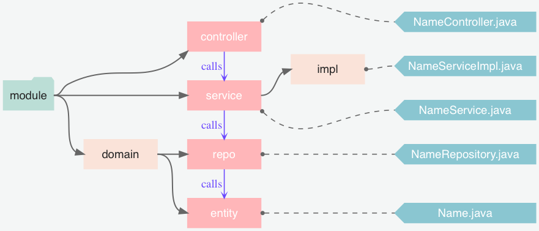

Spring全家桶
Table of Contents
- 1. Spring Framework
- 2. Spring Boot
- 3. Spring Data
- 4. Spring Cloud
- 5. 参考链接
1 Spring Framework
1.1 简介
Spring Framework 是一个开源框架，是为了解决企业应用程序开发复杂性而创建的。框 架的主要优势之一就是其分层架构，分层架构允许您选择使用哪一个组件，同时为 J2EE 应用程序开发提供集成的框架。

1.2 Spring 的技术点和优点
作为 Java Web 开发的龙头老大， Spring 的优点是不需要打广告了，Spring Framework 官网上给出了一下技术要点
- 核心技术：依赖注入，事件，资源，i18n，验证，数据绑定，类型转换，SpEL，AOP
- 测试：模拟对象，TestContext 框架，Spring MVC 测试，WebTestClient
- 数据访问：事务，DAO 支持，JDBC，ORM，编组 XML
- Spring MVC 和 SpringWebFlux Web 框架
- 整合：远程处理，JMS，JCA，JMX，电子邮件，任务，调度，缓存
- 语言：Kotlin，Groovy，动态语言
Spring 的技术点很多，被很多人在工作中应用。这显然是离不开 Spring 团队优秀的设 计，以下是 Spring Framework 的几个比较突出的优点：
- 轻量级：Spring 在大小和透明性方面绝对属于轻量级的，基础版本的 Spring 框架 大约只有 2MB
- 控制反转(IoC)：Spring 使用控制反转技术实现了松耦合。依赖被注入到对象，而不 是创建或寻找依赖对象
- 面向切面编程(AOP)： Spring 支持面向切面编程，同时把应用的业务逻辑与系统的 服务分离开来
- 容器：Spring 包含并管理应用程序对象的配置及生命周期
- MVC 框架：Spring 的 Web 框架是一个设计优良的 Web MVC 框架，很好的取代了一 些 Web 框架
- 事务管理：Spring 对下至本地业务上至全局业务(JAT)提供了统一的事务管理接口
- 异常处理：Spring 提供一个方便的 API 将特定技术的异常(由 JDBC, Hibernate,或 JDO 抛出)转化为一致的、Unchecked 异常
1.3 IoC (Inversion of Control)
- IoC 也被称为 DI (dependency injection)，是实现 bean 的依赖关系，即在初始化 一个 IoC 容器时，先将其依赖的容器一并初始化，并注入的新的容器中。
- IoC 的好处是可以自动管理 Java 类的示例，提升开发速度
- Spring 管类的实例叫 Bean，Spring 提供了一系列方法来管理 Bean，其中包括：
- BeanFactory Bean 的工厂，ApplicationContext 应用运行的上下文。注意： ApplicationContext 和 BeanFactory 都能实例化 Bean，但是一般尽量使用 ApplicationContext，因为 ApplicationContext 还额外提供了一些其他功能，如： 继承生命周期管理，BeanPostProcessor 自动注册，BeanFactoryPostProcessor 等
- 还有一些 XML 配置类的解析，XML 配置相当于 Spring 构建 Bean 的蓝图，早期 Spring 都用 XML 来配置类，但是由于太复杂，现在已经被 Java 的注解所代替
1.4 创建 Spring 项目
创建一个 Maven 项目项目工程
mvn archetype:generate \ -DarchetypeArtifactId=maven-archetype-quickstart \ -DinteractiveMode=false -DgroupId=io.github.jeanhwea -DartifactId=mapp
添加 spring-context 的项目依赖到 pom.xml 文件中
<dependency> <groupId>org.springframework</groupId> <artifactId>spring-context</artifactId> <version>5.2.4.RELEASE</version> </dependency>
使用命令行的方式运行主类
mvn exec:java -Dexec.mainClass="io.github.jeanhwea.App" -Dexec.classpathScope=runtime
1.5 容器 Container 和 Bean
Spring Framework 提供了管理 Bean 的接口 ApplicationContext，也就是说 Bean 的 初始化都是在 ApplicationContext 的实现中处理的，比如： ClassPathXmlApplicationContext 和 FileSystemXmlApplicationContext 都对 ApplicationContext 进行实现，这些 ApplicationContext 是装在 Bean 的，所以被称 为容器。
Bean 其实是一种 Java 的对象，在 Spring 中，Bean 除了普通定义的 Java 代码以外，
还需要一些其他的元信息，例如：定义的 XML，或者 @Component 注解。所以 Spring
中的对象和普通 Java 对象是不一样的，为了体现 Spring 的高贵性，就将 Spring 中
的对象称为 Bean。Bean 的 XML 配置非常恶心且繁琐，不需要记的，用的时候去官网上
查就行。
关于 Bean 的使用需要掌握以下几个要点
- Bean Class, Name, Alias, Constructor arguments, Properties
- Bean Scope: singlenton, prototype, request, session, application, websocket
- Reference:
ref/refid - Collections
<list/>,<set/>,<map/> - Autowiring:
no,byName,byType, constructor *AwareInterfaces: ApplicationContextAware, ResourceLoaderAware, BeanFactoryAware- Bean Definition Inheritance:
<parent/> - Lazy initialization mode
- Initialization method
- Initialization/Destruction method
- Annotation:
@Required,@Autowired
1.6 资源 Resource
Spring 秉承着一切皆资源，将可以被访问的东西都囊括在 Resource 接口中。并提供了
以下一些实现，用户可以直接通过 URL 来获取: classpath:config.xml,
file:///data/config.xml, http://myservice/logo.png, /path/to/file.txt
- UrlResource
- ClassPathResource
- FileSystemResource
- ServletContextResource
- InputStreamResource
- ByteArrayResource
1.7 面向切面编程 AOP
AOP 框架创建的对象，代理就是目标对象的加强。Spring 中的 AOP 代理可以使 JDK 动态代理， 也可以是 CGLIB 代理，前者基于接口，后者基于子类。
- Aspect 通常是一个类，里面可以定义切入点和通知
- Join Point 程序执行过程中明确的点，一般是方法的调用
- Advice 在特定的切入点上执行的增强处理
- Pointcut 带有通知的连接点，在程序中主要体现为书写切入点表达式
package com.xyz.someapp; import org.aspectj.lang.annotation.Aspect; import org.aspectj.lang.annotation.Pointcut; @Aspect public class SystemArchitecture { / * A join point is in the web layer if the method is defined * in a type in the com.xyz.someapp.web package or any sub-package * under that. / @Pointcut("within(com.xyz.someapp.web..)") public void inWebLayer() {} / * A join point is in the service layer if the method is defined * in a type in the com.xyz.someapp.service package or any sub-package * under that. / @Pointcut("within(com.xyz.someapp.service..)") public void inServiceLayer() {} / * A join point is in the data access layer if the method is defined * in a type in the com.xyz.someapp.dao package or any sub-package * under that. / @Pointcut("within(com.xyz.someapp.dao..)") public void inDataAccessLayer() {} / * A business service is the execution of any method defined on a service * interface. This definition assumes that interfaces are placed in the * "service" package, and that implementation types are in sub-packages. * * If you group service interfaces by functional area (for example, * in packages com.xyz.someapp.abc.service and com.xyz.someapp.def.service) then * the pointcut expression "execution(* com.xyz.someapp..service..(..))" * could be used instead. * * Alternatively, you can write the expression using the 'bean' * PCD, like so "bean(Service)". (This assumes that you have * named your Spring service beans in a consistent fashion.) */ @Pointcut("execution( com.xyz.someapp..service..(..))") public void businessService() {} /* * A data access operation is the execution of any method defined on a * dao interface. This definition assumes that interfaces are placed in the * "dao" package, and that implementation types are in sub-packages. */ @Pointcut("execution( com.xyz.someapp.dao..(..))") public void dataAccessOperation() {} }
1.8 测试
Spring 框架的一个特色就是提供测试 Spring Testing 的功能，对于日常工作测试，主
要了解 @Transactional, @Rollback 以及 @Commit 这样三个注解功能。Spring
测试时默认开启事务，如果测试中修改或删除了数据，在测试后要求修改回来。
1.9 事务
1.9.1 @Transactional
事务不仅仅是 Spring 特有的特性，在数据库并发中普遍存在，具体事务的特性我在
Oracle 中事务一节中有详细地讨论，这里着重记录 Spring 中 @Transactional 标注的使
用
在 Spring 中，事务使用操作的相关讨论出现在 Data Access 一节中，
@Transactional 开启一个事务，例如下面的 FooService 开启了事务管理，虽然
Spring 也支持 XML 方式配置事务，但是比较麻烦，尽量避免使用
@Transactional public class DefaultFooService implements FooService { Foo getFoo(String fooName) { /* ... */ } Foo getFoo(String fooName, String barName) { /* ... */ } void insertFoo(Foo foo) { /* ... */ } void updateFoo(Foo foo) { /* ... */ } }
事务显然有很多属性可以配置，例如：是否只读，是否传播，隔离级别，超时的时长， 以及为何中异常回滚，因为属性多，所以需移步官网文档 Transactional Settings
@Transactional(readOnly = true) public class DefaultFooService implements FooService { public Foo getFoo(String fooName) { /* ... */ } // these settings have precedence for this method @Transactional(readOnly = false, propagation = Propagation.REQUIRES_NEW) public void updateFoo(Foo foo) { /* ... */ } }
在 Spring 中，事务包含一个传播方式，大体上有如下几种：
PROPAGATION_REQUIRED所有方法串在一个事务中执行PROPAGATION_REQUIRES_NEW每次进入子方法时，新开一个事务PROPAGATION_NESTED所有方法串在一个事务中，但是进入子方法时记录保存点 (Save Point)
Spring 也支持多事务管理员角色的注解，使用方法参考下面例子
public class TransactionalService { @Transactional("order") public void setSomething(String name) { /* ... */ } @Transactional("account") public void doSomething() { /* ... */ } }
也可以自己定制的方式定义属于业务逻辑的事务管理注解，参考如下的例子
@Target({ElementType.METHOD, ElementType.TYPE}) @Retention(RetentionPolicy.RUNTIME) @Transactional("order") public @interface OrderTx { } @Target({ElementType.METHOD, ElementType.TYPE}) @Retention(RetentionPolicy.RUNTIME) @Transactional("account") public @interface AccountTx { }
public class TransactionalService { @OrderTx public void setSomething(String name) { /* ... */ } @AccountTx public void doSomething() { /* ... */ } }
1.9.2 TransactionTemplate
Spring 实现了 TransactionTemplate 模版类，也可以很方便的操纵事务相关的业务
public class SimpleService implements Service { // single TransactionTemplate shared amongst all methods in this instance private final TransactionTemplate transactionTemplate; // use constructor-injection to supply the PlatformTransactionManager public SimpleService(PlatformTransactionManager transactionManager) { this.transactionTemplate = new TransactionTemplate(transactionManager); } public Object someServiceMethod() { return transactionTemplate.execute(new TransactionCallback() { // the code in this method executes in a transactional context public Object doInTransaction(TransactionStatus status) { updateOperation1(); return resultOfUpdateOperation2(); } }); } }
1.10 Spring MVC
1.10.1 简介
Spring MVC 是 Spring Web MVC 通用叫法，由于 spring-webmvc 包的缘故，之前才被
称为 Spring Web MVC。 他提供了开发 MVC 页面的框架，它期初是建立在 Servlet API 基
础上。 我一般讲 Spring MVC 项目组织成如下结构：

1.10.2 核心组件
Spring MVC 是对通用 Servlet 的一个代理，其实现的 DispatcherServlet 提供对请 求预处理的共享算法。WebApplicationContext 是 ApplicationContext 的子类，他除 了继承 Spring 的 IoC 功能以外，提供了许多对 Web 操作的功能。
1.10.3 Servlet 配置
Spring MVC 提供了配置 Servlet 的方法。实现 WebApplicationinitializer 接口的 类都可以在 Web 应用程序启动时被加载。具体操作如下：
import org.springframework.web.WebApplicationInitializer; public class MyWebApplicationInitializer implements WebApplicationInitializer { @Override public void onStartup(ServletContext container) { XmlWebApplicationContext appContext = new XmlWebApplicationContext(); appContext.setConfigLocation("/WEB-INF/spring/dispatcher-config.xml"); ServletRegistration.Dynamic registration = container.addServlet("dispatcher", new DispatcherServlet(appContext)); registration.setLoadOnStartup(1); registration.addMapping("/"); } }
1.10.4 控制器
Spring MVC 默认使用 @Controller 来表示控制器，如果后台开发的大部分返回
Json 的话，我们可以使用 @RestController 来注解，他相当于 @Controller 和
@ResponseBody 这两个的组合。
@Controller public class HelloController { @GetMapping("/hello") public String handle(Model model) { model.addAttribute("message", "Hello World!"); return "index"; } }
1.11 HTTP 请求映射
通常，可以通过二级路由的方法管理控制器类，详见如下例子：
@RestController @RequestMapping("/persons") class PersonController { @GetMapping("/{id}") public Person getPerson(@PathVariable Long id) { /* ... */ } @PostMapping @ResponseStatus(HttpStatus.CREATED) public void add(@RequestBody Person person) { /* ... */ } }
路径参数中包含如下三种通配符：
?匹配一个字符*匹配零个或多个路径中的字符**匹配零个或多个路径
@GetMapping("/owners/{ownerId}/pets/{petId}") public Pet findPet(@PathVariable Long ownerId, @PathVariable Long petId) { /* ... */ } @GetMapping("/pets/{petId}") public Pet findPet(@PathVariable("petId") id) { /* ... */ } @GetMapping("/{name:[a-z-]+}-{version:\\d\\.\\d\\.\\d}{ext:\\.[a-z]+}") public void handle(@PathVariable String version, @PathVariable String ext) { /* ... */ } @GetMapping("/pets/{petId}") // same as @RequestMapping("/pets/{petId}", method=HttpMethod.GET)
匹配 Content-Type 字段的值，将控制器局限到对应的类型的文件处理
@PostMapping(path = "/pets", consumes = "application/json") public void addPet(@RequestBody Pet pet) { /* ... */ } @PostMapping(path = "/pets", consumes = "!text/plain") public void addPet(@RequestBody Pet pet) { /* ... */ }
返回多媒体类型的流，参考 Accept 请求头
@GetMapping(path = "/pets/{petId}", produces = "application/json") @ResponseBody public Pet getPet(@PathVariable String petId) { /* ... */ }
根据请求的添加来部分匹配
@GetMapping(path = "/pets/{petId}", params = "myParam=myValue") public void findPet(@PathVariable String petId) { /* ... */ } @GetMapping(path = "/pets", headers = "myHeader=myValue") public void findPet(@PathVariable String petId) { /* ... */}
还可以通过以下的方式来动态注册请求 URL 到处理方法
@Configuration public class MyConfig { @Autowired public void setHandlerMapping(RequestMappingHandlerMapping mapping, UserHandler handler) throws NoSuchMethodException { RequestMappingInfo info = RequestMappingInfo .paths("/user/{id}").methods(RequestMethod.GET).build(); Method method = UserHandler.class.getMethod("getUser", Long.class); mapping.registerMapping(info, handler, method); } }
1.12 响应函数参数和返回值
Method Handler 包括方法参数和返回值注解。其中请求的方法输入参数包括：
常用注解 @RequestParam, @RequestHeader, @RequestBody 。还包括一些类
javax.servlet.ServletRequest, javax.servlet.ServletResponse, HttpMethod
返回值也支持好多种注解已经类，列表等： @ResponseBody, HttpEntity<B>
矩阵变量
// GET /pets/42;q=11;r=22 @GetMapping("/pets/{petId}") public void findPet(@PathVariable String petId, @MatrixVariable int q) { // petId == 42 // q == 11 } // GET /owners/42;q=11/pets/21;q=22 @GetMapping("/owners/{ownerId}/pets/{petId}") public void findPet(@MatrixVariable(name="q", pathVar="ownerId") int q1, @MatrixVariable(name="q", pathVar="petId") int q2) { // q1 == 11 // q2 == 22 } // GET /pets/42 @GetMapping("/pets/{petId}") public void findPet(@MatrixVariable(required=false, defaultValue="1") int q) { // q == 1 } // GET /owners/42;q=11;r=12/pets/21;q=22;s=23 @GetMapping("/owners/{ownerId}/pets/{petId}") public void findPet(@MatrixVariable MultiValueMap<String, String> matrixVars, @MatrixVariable(pathVar="petId") MultiValueMap<String, String> petMatrixVars) { // matrixVars: ["q" : [11,22], "r" : 12, "s" : 23] // petMatrixVars: ["q" : 22, "s" : 23] }
请求参数
@Controller @RequestMapping("/pets") public class EditPetForm { @GetMapping public String setupForm(@RequestParam("petId") int petId, Model model) { Pet pet = this.clinic.loadPet(petId); model.addAttribute("pet", pet); return "petForm"; } }
请求头参数
@GetMapping("/demo") public void handle(@RequestHeader("Accept-Encoding") String encoding, @RequestHeader("Keep-Alive") long keepAlive) { }
Cookie 值
@GetMapping("/demo") public void handle(@CookieValue("JSESSIONID") String cookie) { }
上传文件
@Controller public class FileUploadController { @PostMapping("/form") public String handleFormUpload(@RequestParam("name") String name, @RequestParam("file") MultipartFile file) { if (!file.isEmpty()) { byte[] bytes = file.getBytes(); // store the bytes somewhere return "redirect:uploadSuccess"; } return "redirect:uploadFailure"; } }
异常处理
@Controller public class SimpleController { @ExceptionHandler public ResponseEntity<String> handle01(IOException ex) { /* ... */ } @ExceptionHandler({FileSystemException.class, RemoteException.class}) public ResponseEntity<String> handle02(IOException ex) { /* ... */ } @ExceptionHandler({FileSystemException.class, RemoteException.class}) public ResponseEntity<String> handle(Exception ex) { /* ... */ } }
全局控制器异常处理，在 RESTFul API 设计中需要优雅的异常处理方式，Spring 建议
可以通过 @ExceptionHandler 和 ResponseEntity 来将返回消息方法返回体中，并
在 @ControllerAdvice 中集中处理。在定义异常实体类时，可以继承
ResponseEntityExceptionHandler 类。
// Target all Controllers annotated with @RestController @ControllerAdvice(annotations = RestController.class) public class ExampleAdvice1 {} // Target all Controllers within specific packages @ControllerAdvice("org.example.controllers") public class ExampleAdvice2 {} // Target all Controllers assignable to specific classes @ControllerAdvice(assignableTypes = {ControllerInterface.class, AbstractController.class}) public class ExampleAdvice3 {}
1.13 跨越 CORS
允许单个 URL 和处理函数跨越可以直接使用 @CrossOrigin 来解决
@RestController @RequestMapping("/account") public class AccountController { @CrossOrigin @GetMapping("/{id}") public Account retrieve(@PathVariable Long id) { /* ... */ } @DeleteMapping("/{id}") public void remove(@PathVariable Long id) { /* ... */ } }
允许类跨域将注解写类头上
@CrossOrigin(origins = "https://domain2.com", maxAge = 3600) @RestController @RequestMapping("/account") public class AccountController { @GetMapping("/{id}") public Account retrieve(@PathVariable Long id) { /* ... */ } @DeleteMapping("/{id}") public void remove(@PathVariable Long id) { /* ... */ } }
或者混合注解方法
@CrossOrigin(maxAge = 3600) @RestController @RequestMapping("/account") public class AccountController { @CrossOrigin("https://domain2.com") @GetMapping("/{id}") public Account retrieve(@PathVariable Long id) { /* ... */ } @DeleteMapping("/{id}") public void remove(@PathVariable Long id) { /* ... */ } }
允许全栈跨域需要实现配置类
@Configuration @EnableWebMvc public class WebConfig implements WebMvcConfigurer { @Override public void addCorsMappings(CorsRegistry registry) { registry.addMapping("/api/**") .allowedOrigins("https://domain2.com") .allowedMethods("PUT", "DELETE") .allowedHeaders("header1", "header2", "header3") .exposedHeaders("header1", "header2") .allowCredentials(true).maxAge(3600); // Add more mappings... } }
1.14 MVC 配置
1.14.1 类型转换配置
@Configuration @EnableWebMvc public class WebConfig implements WebMvcConfigurer { @Override public void addFormatters(FormatterRegistry registry) { DateTimeFormatterRegistrar registrar = new DateTimeFormatterRegistrar(); registrar.setUseIsoFormat(true); registrar.registerFormatters(registry); } }
1.14.2 静态资源配置
@Configuration @EnableWebMvc public class WebConfig implements WebMvcConfigurer { @Override public void addResourceHandlers(ResourceHandlerRegistry registry) { registry.addResourceHandler("/resources/**") .addResourceLocations("/public", "classpath:/static/") .setCachePeriod(31556926); } }
1.15 URI 连接
1.15.1 UriComponents 构造 URI 对象
UriComponentsBuilder 可以新建一个 UriComponents 的实例，示例程序如下
URI uri = UriComponentsBuilder .fromUriString("https://example.com/hotels/{hotel}") .queryParam("q", "{q}") .encode() .buildAndExpand("Westin", "123") .toUri(); URI uri = UriComponentsBuilder .fromUriString("https://example.com/hotels/{hotel}") .queryParam("q", "{q}") .build("Westin", "123");
1.15.2 URI 编码
URI uri = UriComponentsBuilder.fromPath("/hotel list/{city}") .queryParam("q", "{q}") .encode() .buildAndExpand("New York", "foo+bar") .toUri(); // Result is "/hotel%20list/New%20York?q=foo%2Bbar" URI uri = UriComponentsBuilder.fromPath("/hotel list/{city}") .queryParam("q", "{q}") .build("New York", "foo+bar"); URI uri = UriComponentsBuilder.fromPath("/hotel list/{city}?q={q}") .build("New York", "foo+bar")
1.16 异步请求
1.16.1 DeferredResult
@GetMapping("/quotes") @ResponseBody public DeferredResult<String> quotes() { DeferredResult<String> deferredResult = new DeferredResult<String>(); // Save the deferredResult somewhere.. return deferredResult; } // From some other thread... deferredResult.setResult(result);
1.16.2 Callable
@PostMapping public Callable<String> processUpload(final MultipartFile file) { return new Callable<String>() { public String call() throws Exception { // ... return "someView"; } }; }
1.17 Rest 客户端
REST 客户端主要用 RestTemplate 和 WebClient。在日常工作中使用 RestTemplate 比 较多，具体可查阅集成一节中的详细叙述 REST Endpoints
2 Spring Boot
用的初始搭建以及开发过程。该框架使用了特定的方式来进行配置，从而使开发人员不再 需要定义样板化的配置。通过这种方式，Spring Boot 致力于在蓬勃发展的快速应用开发 Spring Boot 是由 Pivotal 团队提供的全新框架，其设计目的是用来简化新 Spring 应 领域成为领导者。Spring Boot 的文档见 HTML ，源代码托管于 GitHub
2.1 创建项目
可以直接通过 Spring Start 网站进行创建，创建一个 Spring Boot 模板工程
curl -s https://start.spring.io/starter.tgz \ -d dependencies=mybatis,web \ -d groupId=io.github.jeanhwea \ -d artifactId=myapp -d name=myapp -d baseDir=myapp \ | tar -xzvf -
2.2 命令行工具
Spring Boot 命令行工具参考 Spring Boot CLI Tool
2.3 编译系统
2.3.1 继承父 Starter
Spring Boot 项目需要继承的父级 Starter，配置如下：
<!-- Inherit defaults from Spring Boot --> <parent> <groupId>org.springframework.boot</groupId> <artifactId>spring-boot-starter-parent</artifactId> <version>2.1.0.RELEASE</version> </parent>
2.3.2 Starters
Starters 是 Spring Boot 对其依赖的再打包，官方的 Starter 都是以
spring-boot-starter 开头，并且存放在 spring-boot-starters 中

spring-boot-starter: Core starter, including auto-configuration support, logging and YAMLspring-boot-starter-activemq: Starter for JMS messaging using Apache ActiveMQspring-boot-starter-amqp: Starter for using Spring AMQP and Rabbit MQspring-boot-starter-aop: Starter for aspect-oriented programming with Spring AOP and AspectJspring-boot-starter-cloud-connectors: Starter for using Spring Cloud Connectors which simplifies connecting to services in cloud platforms like Cloud Foundry and Herokuspring-boot-starter-data-elasticsearch: Starter for using Elasticsearch search and analytics engine and Spring Data Elasticsearchspring-boot-starter-data-jpa: Starter for using Spring Data JPA with Hibernatespring-boot-starter-data-ldap: Starter for using Spring Data LDAPspring-boot-starter-data-mongodb: Starter for using MongoDB document-oriented database and Spring Data MongoDBspring-boot-starter-data-mongodb-reactive: Starter for using MongoDB document-oriented database and Spring Data MongoDB Reactivespring-boot-starter-data-neo4j: Starter for using Neo4j graph database and Spring Data Neo4jspring-boot-starter-data-redis: Starter for using Redis key-value data store with Spring Data Redis and the Lettuce clientspring-boot-starter-data-redis-reactive: Starter for using Redis key-value data store with Spring Data Redis reactive and the Lettuce clientspring-boot-starter-integration: Starter for using Spring Integrationspring-boot-starter-json: Starter for reading and writing jsonspring-boot-starter-oauth2-client: Starter for using Spring Security's OAuth2/OpenID Connect client featuresspring-boot-starter-oauth2-resource-server: Starter for using Spring Security's OAuth2 resource server featuresspring-boot-starter-quartz: Starter for using the Quartz schedulerspring-boot-starter-security: Starter for using Spring Securityspring-boot-starter-test: Starter for testing Spring Boot applications with libraries including JUnit, Hamcrest and Mockitospring-boot-starter-web: Starter for building web, including RESTful, applications using Spring MVC. Uses Tomcat as the default embedded containerspring-boot-starter-web-services: Starter for using Spring Web Servicesspring-boot-starter-webflux: Starter for building WebFlux applications using Spring Framework's Reactive Web supportspring-boot-starter-websocket: Starter for building WebSocket applications using Spring Framework's WebSocket support
2.4 Spring Beans 和依赖注入
Spring Framework 的相关技术在 Spring Boot 工程中都是支持的，常见的标注如下：
@ComponentScan: 查找 Beans@Autowired: 注入的构造器@Component: 组件@Repository: 仓库@Service: 服务@Controller: 控制器
下面是依赖注入的示例
package com.example.service; import org.springframework.beans.factory.annotation.Autowired; import org.springframework.stereotype.Service; @Service public class DatabaseAccountService implements AccountService { private final RiskAssessor riskAssessor; @Autowired public DatabaseAccountService(RiskAssessor riskAssessor) { this.riskAssessor = riskAssessor; } // ... }
@Service public class DatabaseAccountService implements AccountService { private final RiskAssessor riskAssessor; public DatabaseAccountService(RiskAssessor riskAssessor) { this.riskAssessor = riskAssessor; } // ... }
2.5 @SpringBootApplication 标注
Spring Framework 提供了下面的基本标注
@EnableAutoConfiguration: 开启自动配置@ComponentScan: 开启自动扫描组件@Configuration: 允许在上下文中注册其它的 Bean 或导入其它的配置类
@SpringBootApplication 相当于同时开启了上面三项配置
package com.example.myapplication; import org.springframework.boot.SpringApplication; import org.springframework.boot.autoconfigure.SpringBootApplication; @SpringBootApplication // same as @Configuration @EnableAutoConfiguration @ComponentScan public class Application { public static void main(String[] args) { SpringApplication.run(Application.class, args); } }
2.6 外部配置
Spring Boot 允许在 Web 应用中读取外部配置，方便程序在不同的环境下产生不同行为。 常见的有两种配置方式，两种配置方式对比如下：
| Feature | @ConfigurationProperties |
@Value |
|---|---|---|
| Relaxed binding | Yes | No |
| Meta-data support | Yes | No |
| SpEL evaluation | No | Yes |
2.6.1 @Value 方式配置
直接使用注释的方式即可将配置的值读入 Java Bean 中，示例如下：
@Component public class MyBean { @Value("${name}") private String name; // ... }
2.6.2 @ConfigurationProperties 方式配置
该种配置方法比 @Value 更加安全
先定义配置项的 Java Bean
package com.example; import java.net.InetAddress; import java.util.ArrayList; import java.util.Collections; import java.util.List; import org.springframework.boot.context.properties.ConfigurationProperties; @ConfigurationProperties("acme") public class AcmeProperties { private boolean enabled; private InetAddress remoteAddress; private final Security security = new Security(); public boolean isEnabled() { /* ... */ } public void setEnabled(boolean enabled) { /* ... */ } public InetAddress getRemoteAddress() { /* ... */ } public void setRemoteAddress(InetAddress remoteAddress) { /* ... */ } public Security getSecurity() { /* ... */ } public static class Security { private String username; private String password; private List<String> roles = new ArrayList<>(Collections.singleton("USER")); public String getUsername() { /* ... */ } public void setUsername(String username) { /* ... */ } public String getPassword() { /* ... */ } public void setPassword(String password) { /* ... */ } public List<String> getRoles() { /* ... */ } public void setRoles(List<String> roles) { /* ... */ } } }
上述的配置类对应于配置文件中的这些配置项
acme.enabled定义一个值，默认为空acme.remote-address能通过字符串强制转换的类型acme.security.username自带 Security 对象，用户名acme.security.passwordacme.security.roles字符串集合
添加配置项，通过 @EnableConfigurationProperties 标注来扫描配置的 Java Bean
@Configuration @EnableConfigurationProperties(AcmeProperties.class) public class MyConfiguration { // ... }
并且需要添加 @Configuration 到 Java Bean 中
@Component @ConfigurationProperties(prefix="acme") public class AcmeProperties { // ... see the preceding example }
最后就可以将定义的 Java Bean 配置项注入到其它组件中
@Service public class MyService { private final AcmeProperties properties; @Autowired public MyService(AcmeProperties properties) { this.properties = properties; } //... @PostConstruct public void openConnection() { Server server = new Server(this.properties.getRemoteAddress()); // ... } }
2.7 允许跨域
Spring Boot 可以通过添加配置类的方法来启用跨域设置，具体参考下面的代码
import org.springframework.context.annotation.Configuration; import org.springframework.web.servlet.config.annotation.CorsRegistry; import org.springframework.web.servlet.config.annotation.EnableWebMvc; import org.springframework.web.servlet.config.annotation.WebMvcConfigurer; @Configuration @EnableWebMvc public class CorsConfiguration implements WebMvcConfigurer { private static final String[] CORS_METHODS = new String[] {"GET", "OPTIONS", "POST", "PUT", "DELETE"}; private static final String[] CORS_HEADERS = new String[] { "Access-Control-Request-Headers", "Access-Control-Request-Method", "Accept", "Authorization", "Cache-Control", "Content-Type", "DNT", "If-Modified-Since", "Keep-Alive", "Origin", "Referer", "User-Agent", "X-Mx-ReqToken", "X-Requested-With" }; @Override public void addCorsMappings(CorsRegistry registry) { registry .addMapping("/**") .allowedOrigins("*") .allowedMethods(CORS_METHODS) .allowedHeaders(CORS_HEADERS) .exposedHeaders(CORS_HEADERS) .allowCredentials(true) .maxAge(3600); } }
2.8 日志
Spring Boot 提供了一个统一的日志配置，可以兼容 Java Util Logging、Log4J2 和 Logback 等日志系统作为后端。
2.8.1 日志样式
默认的输出样式如下：
2014-03-05 10:57:51.112 INFO 45469 --- [ main] org.apache.catalina.core.StandardEngine : Starting Servlet Engine: Apache Tomcat/7.0.52 2014-03-05 10:57:51.253 INFO 45469 --- [ost-startStop-1] o.a.c.c.C.[Tomcat].[localhost].[/] : Initializing Spring embedded WebApplicationContext 2014-03-05 10:57:51.253 INFO 45469 --- [ost-startStop-1] o.s.web.context.ContextLoader : Root WebApplicationContext: initialization completed in 1358 ms 2014-03-05 10:57:51.698 INFO 45469 --- [ost-startStop-1] o.s.b.c.e.ServletRegistrationBean : Mapping servlet: 'dispatcherServlet' to [/] 2014-03-05 10:57:51.702 INFO 45469 --- [ost-startStop-1] o.s.b.c.embedded.FilterRegistrationBean : Mapping filter: 'hiddenHttpMethodFilter' to: [/*]
包括以下几个部分：
- Date and Time: Millisecond precision and easily sortable
- Log Level: ERROR, WARN, INFO, DEBUG, or TRACE
- Process ID
- A — separator to distinguish the start of actual log messages
- Thread name: Enclosed in square brackets (may be truncated for console output)
- Logger name: This is usually the source class name (often abbreviated)
- The log message
2.8.2 控制台输出
控制台输出默认记录 ERROR, WARN 和 INFO 基本的日志，可以使用 --debug 开启调
试级别的输出。
java -jar myapp.jar --debug
也可以在配置文件 application.yml 中设置 debug=true
如果控制台支持彩色输出，那么还可以配置彩色输出日志
- 开启配置文件中的
spring.output.ansi.enabled选项 - 使用
%clr(%5p)可以根据日志基本来变换颜色。各级别对应的颜色： 红色 (FATAL, ERROR)，黄色（INFO），绿色（INFO, DEBUG） - 设置日期的颜色
%clr(%d{yyyy-MM-dd HH:mm:ss.SSS}){yellow}，默认支持以下几 种色彩： blue cyan faint green magenta red yellow
2.8.3 文件输出
文件输出通过 logging.file 和 logging.path 来控制
| logging.file | logging.path | Example | Description |
|---|---|---|---|
| (none) | (none) | 仅开启控制台输出 | |
| Specific file | (none) | my.log | 输出到文件，文件路径是当前文件夹的相对路径 |
| (none) | Specific directory | /var/log | 输出到文件，文件路径可以是相对路径或绝对路径 |
logging.file.max-size设置文件的最大存储大小logging.file.max-history设置最大的历史文件数量
2.8.4 日志级别
日志级别可以通过 logging.level.<logger-name>=<level> 来设置，
logging.level.root 是设置默认级别
logging.level.root=WARN logging.level.org.springframework.web=DEBUG logging.level.org.hibernate=ERROR
2.8.5 日志分组
日志基本可以通过分组来设置，例如
logging.group.tomcat=org.apache.catalina, org.apache.coyote, org.apache.tomcat
Spring Boot 的默认分组有下面几个：
- web :
org.springframework.core.codec, org.springframework.http, org.springframework.web - sql :
org.springframework.jdbc.core, org.hibernate.SQL
2.9 配置数据库
2.9.1 MySQL
application.yml 配置文件中添加用户名、密码等相关信息
spring: jpa: database-platform: org.hibernate.dialect.MySQL5Dialect datasource: platform: mysql username: username password: password url: jdbc:mysql://localhost:3306/database?useUnicode=true&characterEncoding=utf-8&useSSL=false driver-class-name: com.mysql.jdbc.Driver
pom.xml 文件中添加 MySQL 依赖
<dependency> <groupId>mysql</groupId> <artifactId>mysql-connector-java</artifactId> <version>5.1.38</version> </dependency>
2.9.2 PostgreSQL
application.yml 配置文件中添加用户名、密码等相关信息
spring: jpa: database-platform: org.hibernate.dialect.PostgreSQL9Dialect datasource: platform: postgres username: username password: password url: jdbc:postgresql://localhost:5432/database driver-class-name: org.postgresql.Driver
pom.xml 文件中添加 PostgreSQL 依赖
<dependency> <groupId>org.postgresql</groupId> <artifactId>postgresql</artifactId> <version>42.2.5</version> </dependency>
2.9.3 Oracle
application.yml 配置文件中添加用户名、密码等相关信息
spring: jpa: database-platform: org.hibernate.dialect.Oracle10gDialect datasource: username: username password: password url: jdbc:oracle:thin:@//localhost:1521/database driver-class-name: oracle.jdbc.OracleDriver
pom.xml 文件中添加 PostgreSQL 依赖
<dependency> <groupId>com.oracle</groupId> <artifactId>ojdbc6</artifactId> <version>11.2.0.4.0</version> <scope>provided</scope> </dependency>
Oracle 的驱动是收费的，需要手工安装，默认在 $ORACLE_HOME/jdbc/lib/ 文件夹
中， 安装适配你项目的 jar 文件即可
mvn install:install-file -Dpackaging=jar \ -DgroupId=com.oracle -DartifactId=ojdbc6 -Dversion=11.2.0.4.0 \ -Dfile=<path-to-jar>
2.9.4 Tomcat 连接池配置
如果你在项目中使用 Tomcat 连接池 作为数据库连接，可能还需要设置的相关参数
# Number of ms to wait before throwing an exception if no connection is available. spring.datasource.tomcat.max-wait=10000 # Maximum number of active connections that can be allocated from this pool at the same time. spring.datasource.tomcat.max-active=50 # Validate the connection before borrowing it from the pool. spring.datasource.tomcat.test-on-borrow=true
2.10 开发工具
Spring Boot 的提供了开发工具套件，可以实现自动加载，仅仅需要在 pom.xml 文件
中加入下面依赖即可自动添加
<dependencies> <dependency> <groupId>org.springframework.boot</groupId> <artifactId>spring-boot-devtools</artifactId> <optional>true</optional> </dependency> </dependencies>
3 Spring Data
3.1 Spring Data JPA
JPA(Java Persistence API)意即 Java 持久化 API，是 Sun 官方在 JDK5.0 后提出的 Java 持久化规范。JPA 的出现主要是为了简化持久层开发以及整合 ORM 技术，结束 Hibernate、TopLink、JDO 等 ORM 框架各自为营的局面。JPA 是在吸收现有 ORM 框架 的基础上发展而来，易于使用，伸缩性强。总的来说，JPA 包括以下 3 方面的技术：
- ORM 映射元数据： 支持 XML 和注解两种元数据的形式，元数据描述对象和表之间的 映射关系
- API： 操作实体对象来执行 CRUD 操作
- 查询语言： 通过面向对象而非面向数据库的查询语言（JPQL）查询数据，避免程序的 SQL 语句紧密耦合
Spring Data JPA 是 Spring Data 家族的一部分，可以轻松实现基于 JPA 的存储库。 此模块处理对基于 JPA 的数据访问层的增强支持。 它使构建使用数据访问技术的 Spring 驱动应用程序变得更加容易。其代码托管于 GitHub ， 文档见 reference 。
3.1.1 格式化 JSON 的时间字符串
使用 JsonFormat 标注可以设置 JSON 字段序列化的格式
import com.fasterxml.jackson.annotation.JsonFormat; import com.fasterxml.jackson.annotation.JsonProperty; class ExampleEntity { @Column(name = "BIRTHDAY") @JsonFormat(pattern = "yyyy-MM-dd") private Timestamp birthday; // 出生日期 @JsonProperty("birthday") public Timestamp birthday() { return this.birthday; } public void birthday(Timestamp birthday) { this.birthday = birthday; } }
4 Spring Cloud
Spring Cloud 是一系列框架的有序集合。它利用 Spring Boot 的开发便利性巧妙地简化 了分布式系统基础设施的开发，如服务发现注册、配置中心、消息总线、负载均衡、断路 器、数据监控等，都可以用 Spring Boot 的开发风格做到一键启动和部署。Spring Cloud 并没有重复制造轮子，它只是将目前各家公司开发的比较成熟、经得起实际考验的 服务框架组合起来，通过 Spring Boot 风格进行再封装屏蔽掉了复杂的配置和实现原理， 最终给开发者留出了一套简单易懂、易部署和易维护的分布式系统开发工具包。
4.1 Spring Cloud Config
Spring Cloud Config 项目是一个解决分布式系统的配置管理方案。它包含了 Client 和 Server 两个部分，Server 提供配置文件的存储、以接口的形式将配置文件的内容提 供出去，Client 通过接口获取数据、并依据此数据初始化自己的应用。

4.1.1 配置文件命名格式
- 配置文件命名方式为: {appname}-{profile}.yml
- appname 是微服务的名称
- profile 是不同的环境，建议用:
dev表示开发环境，prod表示线 上运行环境
- 对应请求的 URI 有以下几种格式
/{application}/{profile}[/{label}]/{application}-{profile}.yml/{label}/{application}-{profile}.yml/{application}-{profile}.properties/{label}/{application}-{profile}.properties
4.1.2 Config Server
- 项目依赖
在
pom.xml文件中添加如下的依赖项<project> <dependencies> <dependency> <groupId>org.springframework.cloud</groupId> <artifactId>spring-cloud-config-server</artifactId> </dependency> </dependencies> <dependencyManagement> <dependencies> <dependency> <groupId>org.springframework.cloud</groupId> <artifactId>spring-cloud-dependencies</artifactId> <version>Greenwich.SR2</version> <type>pom</type> <scope>import</scope> </dependency> </dependencies> </dependencyManagement> </project>
- 引导类
中心服务器的引导累着需要添加
@EnableConfigServer来启用配置服务器import org.springframework.boot.SpringApplication; import org.springframework.boot.autoconfigure.SpringBootApplication; import org.springframework.cloud.config.server.EnableConfigServer; @SpringBootApplication @EnableConfigServer public class Application { public static void main(String[] args) { SpringApplication.run(Application.class, args); } }
- Git 远端配置项
在中心配置服务器中的
application.yml中添加相应的配置spring: profiles: active: default cloud: config: server: git: uri: http://github.com/avic/configfiles.git searchPaths: - path1 - path2 username: user password: pass
4.1.3 Config Client
- 配置相关文件
首先修改 pom.xml, application.yml 和 bootstrap.yml 这三项配置文件
<!-- pom.xml --> <project> <!-- 1. 添加下面四个依赖项 --> <dependencies> <dependency> <groupId>org.springframework.cloud</groupId> <artifactId>spring-cloud-starter-config</artifactId> </dependency> <dependency> <groupId>org.springframework.boot</groupId> <artifactId>spring-boot-starter-actuator</artifactId> </dependency> <dependency> <groupId>org.springframework.boot</groupId> <artifactId>spring-boot-starter-web</artifactId> </dependency> <dependency> <groupId>org.springframework.boot</groupId> <artifactId>spring-boot-starter-test</artifactId> <scope>test</scope> </dependency> </dependencies> <!-- 2. 设置依赖管理 --> <dependencyManagement> <dependencies> <dependency> <groupId>org.springframework.cloud</groupId> <artifactId>spring-cloud-dependencies</artifactId> <!-- 这个 version 需要和你使用的 spring boot 版本适配，否则应用起不来 --> <version>Greenwich.SR2</version> <!-- 我的项目中 spring boot 版本是 2.1.0.RELEASE, 所以 cloud 的版本使用 Greenwich --> <type>pom</type> <scope>import</scope> </dependency> </dependencies> </dependencyManagement> </project>
# src/main/resources/application.yml management: endpoints: web: exposure: include: '*'
# src/main/resources/bootstrap.yml spring: application: name: appname # 这里写你项目的名称 profiles: active: dev # 这里配置你需要的 profile cloud: config: uri: http://192.168.0.231/peizhi
- 引导类
在系统启动的引导类中添加
@RefreshScope注解import org.springframework.boot.autoconfigure.SpringBootApplication; import org.springframework.cloud.context.config.annotation.RefreshScope; @SpringBootApplication @RefreshScope public class Application { public static void main(String[] args) { SpringApplication.run(Application.class, args); } }
4.2 Spring Cloud Netflix
Spring Cloud Netflix 是通过自动配置和绑定提供为 spring boot 应用提供 OSS 集成 功能，它的子项目包括：
- Eureka: 服务发现 (Service Discovery)
- Hystrix : 断路器 (Circuit Breaker)
- Zuul : 智能路由 (Intelligent Routing)
- Ribbon : 客户端的负载均衡 (Client Side Load Balancing)
官方是参考手册见 2.2.0.M1
4.2.1 Eureka
Eureka 是 Spring Cloud Netflix 开发的服务发现框架，本身是一个基于 REST 的服 务。Spring Cloud 将它集成在其子项目 spring-cloud-netflix 中，以实现 Spring Cloud 的服务发现功能。 Eureka 项目本身包括客户端和服务器两个子项目，具体配置 如下：
- Eureka Client
- 配置相关文件
pom.xml添加spring-cloud-starter-netflix-eureka-client的依赖项<!-- pom.xml --> <project> <dependencies> <dependency> <groupId>org.springframework.cloud</groupId> <artifactId>spring-cloud-starter-netflix-eureka-client</artifactId> </dependency> </dependencies> </project>
application.yml添加配置项eureka: instance: instanceId: app-instance-id hostname: my.app.host nonSecurePort: 8080 # http 请求的端口号 client: fetchRegistry: true registerWithEureka: true serviceUrl: defaultZone: http://localhost:8761/eureka/
如果开启
preferIpAddress就会忽略hostname，因为有的时候微服务被部署 到 docker 容器中，主机名可能是随机分配的，不好管理可以考虑建立个 docker 的 内网，使用 IP 直接注册。eureka: instance: preferIpAddress: true # 使用 IP 地址注册，而不是使用主机名注册
- 配置引导类
spring-cloud-starter-netflix-eureka-client依赖项后会将当前项目自动注册 到 Eureka Server 上@SpringBootApplication @RestController public class Application { @RequestMapping("/") public String home() { return "Hello world"; } public static void main(String[] args) { new SpringApplicationBuilder(Application.class).web(true).run(args); } }
也可以使用
@EnableDiscoveryClient的注解来显示激活
- 配置相关文件
- Eureka Server
- 配置相关文件
pom.xml添加spring-cloud-starter-netflix-eureka-server的依赖项<!-- pom.xml --> <project> <dependencies> <dependency> <groupId>org.springframework.cloud</groupId> <artifactId>spring-cloud-starter-netflix-eureka-server</artifactId> </dependency> </dependencies> </project>
application.yml添加配置项，下面是 Standalone 模式的配置方法eureka: instance: hostname: localhost client: fetchRegistry: false # 不要在本地缓存注册表信息 registerWithEureka: false serverUrl: defaultZone: http://localhost:8761/eureka/ server: waitTimeInMsWhenSyncEmpty: 5 # 在服务器接收请求之前的等待时间
Peer Awareness 模式配置方法如下：
--- spring: profiles: peer1 eureka: instance: hostname: peer1 client: serviceUrl: defaultZone: https://peer2/eureka/ --- spring: profiles: peer2 eureka: instance: hostname: peer2 client: serviceUrl: defaultZone: https://peer1/eureka/
- 配置引导类
使用
@EnableEurekaServer来开启 Eureka Server@SpringBootApplication @EnableEurekaServer public class Application { public static void main(String[] args) { new SpringApplicationBuilder(Application.class).web(true).run(args); } }
- 配置相关文件
4.2.2 Hystrix
Hystrix 是 SOA 微服务架构中提供服务隔离、熔断、降级机制的工具/框架。Hystrix 是断路器的一种实现，用于高微服务架构的可用性，是防止服务出现雪崩的利器。 Hystrix 实现了 Martin Fowler 的 Circuit Breaker 模式，熔断器的机制的思想很简 单直白，即在 Client 和 Supplier 之间实现一个 Circuit Breaker 层，当 Supplier 出现错误或超时，就对 Client 的请求进行截断
- Hystrix Client
- 配置相关文件
pom.xml添加spring-cloud-starter-netflix-hystrix的依赖项<!-- pom.xml --> <project> <dependencies> <dependency> <groupId>org.springframework.cloud</groupId> <artifactId>spring-cloud-starter-netflix-hystrix</artifactId> </dependency> <dependency> <groupId>com.netflix.hystrix</groupId> <artifactId>hystrix-javanica</artifactId> <!-- <version>x.y.z</version> --> </dependency> </dependencies> </project>
- 配置引导类
@SpringBootApplication @EnableCircuitBreaker public class Application { public static void main(String[] args) { new SpringApplicationBuilder(Application.class).web(true).run(args); } } @Component public class StoreIntegration { @HystrixCommand(fallbackMethod = "defaultStores") public Object getStores(Map<String, Object> parameters) { //do stuff that might fail } public Object defaultStores(Map<String, Object> parameters) { return /* something useful */; } }
@HystrixCommand由 javanica 库提供，该库可以自动代理一些熔断处理。@EnableCircuitBreaker开启熔断器 - 弹性模式
Hystrix 的常见弹性模式有以下几种：
- 断路器模式：确保客户端不会重复调用失败的服务
- 后备模式：调用失败后，询问是否有可以执行的替代方案
- 舱壁模式：隔断服务客户端上的不同服务调用，以确保表现不佳的服务不会耗尽客 户端的所有资源
- 配置相关文件
- Hystrix Dashboard
Hystrix 监控除了隔离依赖服务的调用以外，Hystrix 还提供了近实时的监控， Hystrix 会实时、累加地记录所有关于 HystrixCommand 的执行信息，包括每秒执行多 少请求多少成功，多少失败等。Netflix 通过
hystrix-metrics-event-stream项 目实现了对以上指标的监控。
4.2.3 Zuul
Zuul 是在云平台上提供动态路由,监控,弹性,安全等边缘服务的框架。Zuul 相当于是 设备和 Netflix 流应用的 Web 网站后端所有请求的前门

- 配置相关文件
pom.xml添加spring-cloud-starter-netflix-zuul的依赖项将 Zuul 引入项目<!-- pom.xml --> <project> <dependencies> <dependency> <groupId>org.springframework.cloud</groupId> <artifactId>spring-cloud-starter-netflix-zuul</artifactId> </dependency> </dependencies> </project>
- 配置引导类
@SpringBootApplication @EnableZuulProxy public class Application { public static void main(String[] args) { new SpringApplicationBuilder(Application.class).web(true).run(args); } }
@EnableZuulProxy来开启 Zuul 服务 - 配置反向代理
Zuul 的反向代理使用的是以下几种方式进行设置
- 通过服务发现自动映射路由
- 通过服务发现手动映射路由
- 通过静态 URL 手动映射路由
使用
@EnableZuulProxy开启 Zuul 服务后，如果正确地配置了 Eureka Client 服务的话，不需要进行其它的配置就可以自动映射路由。根据惯例，Zuul 会自动给 反向代理的微服务添加前缀，例如： 如果微服务的名字是users，则 Zuul 会将/users/**的请求全部映射到users微服务中手动配置反向代理需要修改
application.yml配置文件，例如下面的配置将/myusers/**请求传递到users微服务中zuul: routes: users: path: /myusers/** serviceId: users_service
使用静态 URL 手动映射路由
zuul: routes: users: path: /myusers/** url: https://example.com/users_service
- 忽略某些微服务
Zuul 允许配置对一些微服务的忽略项
# 忽略所有微服务 zuul: ignoredServices: '*' routes: users: /myusers/** # 忽略某个微服务，微服务的名字为 appname zuul: ignoredServices: 'appname' routes: users: /myusers/** # 添加统一的前缀 /api zuul: ignoredServices: '*' prefix: /api routes: users: /myusers/** # 忽略所有带有 /admin/ 路由的调用接口 zuul: ignoredPatterns: /**/admin/** routes: users: /myusers/**
- 头部的设置选项
将
Cookies,Set-Cookie,Authorization设置成敏感的头部，忽略一些头部zuul: routes: users: path: /myusers/** # Cookies 和敏感的头部 sensitiveHeaders: Cookie,Set-Cookie,Authorization # 忽略的头部 ignoredHeaders: Header1 # 是否忽略安全头部 ignoreSecurityHeaders: true url: https://downstream
- 管理端点 Endpoint
Zuul 提供了一些管理路由的 RESTful 接口
GET /routes获取所有解析的路由GET /routes/detail获取详细路由信息POST /routes强制刷新路由GET /filter获取所有的过滤器
下面是一些示例
curl http://localhost/routes
{ "/stores/**": "http://localhost:8081" }curl http://localhost/routes/detail
{ "/stores/**": { "id": "stores", "fullPath": "/stores/**", "location": "http://localhost:8081", "path": "/**", "prefix": "/stores", "retryable": false, "customSensitiveHeaders": false, "prefixStripped": true } } - 基本使用场景
如下所示将相关路由反向代理到对应的 URL
原始请求 代理后的请求 /fisrt/1 https://first.exmple.com/1 /second/2 /second/2 /third/3 /3rd/3 /no https://legacy.example.com/no zuul: routes: first: path: /first/** url: https://first.example.com second: path: /second/** url: forward:/second third: path: /third/** url: forward:/3rd legacy: path: /** url: https://legacy.example.com
Zuul 的详细配置见 Zuul wiki
- 过滤器
前置过滤器（Pre Filter）的在请求之前先进行处理，设置
RequestContext的相 关参数提供后面的处理public class QueryParamPreFilter extends ZuulFilter { @Override public int filterOrder() { return PRE_DECORATION_FILTER_ORDER - 1; // run before PreDecoration } @Override public String filterType() { return PRE_TYPE; } @Override public boolean shouldFilter() { RequestContext ctx = RequestContext.getCurrentContext(); return !ctx.containsKey(FORWARD_TO_KEY) // a filter has already forwarded && !ctx.containsKey(SERVICE_ID_KEY); // a filter has already determined serviceId } @Override public Object run() { RequestContext ctx = RequestContext.getCurrentContext(); HttpServletRequest request = ctx.getRequest(); if (request.getParameter("sample") != null) { // put the serviceId in `RequestContext` ctx.put(SERVICE_ID_KEY, request.getParameter("foo")); } return null; } }
路由过滤器（Route Filter）在前置过滤器之后，请求其它服务之前。通常路由过滤 器用来转义请求和回复的数据，下面是一个例子
public class OkHttpRoutingFilter extends ZuulFilter { @Autowired private ProxyRequestHelper helper; @Override public String filterType() { return ROUTE_TYPE; } @Override public int filterOrder() { return SIMPLE_HOST_ROUTING_FILTER_ORDER - 1; } @Override public boolean shouldFilter() { return RequestContext.getCurrentContext().getRouteHost() != null && RequestContext.getCurrentContext().sendZuulResponse(); } @Override public Object run() { OkHttpClient httpClient = new OkHttpClient.Builder() // customize .build(); RequestContext context = RequestContext.getCurrentContext(); HttpServletRequest request = context.getRequest(); String method = request.getMethod(); String uri = this.helper.buildZuulRequestURI(request); Headers.Builder headers = new Headers.Builder(); Enumeration<String> headerNames = request.getHeaderNames(); while (headerNames.hasMoreElements()) { String name = headerNames.nextElement(); Enumeration<String> values = request.getHeaders(name); while (values.hasMoreElements()) { String value = values.nextElement(); headers.add(name, value); } } InputStream inputStream = request.getInputStream(); RequestBody requestBody = null; if (inputStream != null && HttpMethod.permitsRequestBody(method)) { MediaType mediaType = null; if (headers.get("Content-Type") != null) { mediaType = MediaType.parse(headers.get("Content-Type")); } requestBody = RequestBody.create(mediaType, StreamUtils.copyToByteArray(inputStream)); } Request.Builder builder = new Request.Builder() .headers(headers.build()) .url(uri) .method(method, requestBody); Response response = httpClient.newCall(builder.build()).execute(); LinkedMultiValueMap<String, String> responseHeaders = new LinkedMultiValueMap<>(); for (Map.Entry<String, List<String>> entry : response.headers().toMultimap().entrySet()) { responseHeaders.put(entry.getKey(), entry.getValue()); } this.helper.setResponse(response.code(), response.body().byteStream(), responseHeaders); context.setRouteHost(null); // prevent SimpleHostRoutingFilter from running return null; } }
后置路由器（Post Filter）主要处理回复，下面是一个添加
UUID和X-Sample头的例子public class AddResponseHeaderFilter extends ZuulFilter { @Override public String filterType() { return POST_TYPE; } @Override public int filterOrder() { return SEND_RESPONSE_FILTER_ORDER - 1; } @Override public boolean shouldFilter() { return true; } @Override public Object run() { RequestContext context = RequestContext.getCurrentContext(); HttpServletResponse servletResponse = context.getResponse(); servletResponse.addHeader("X-Sample", UUID.randomUUID().toString()); return null; } }
4.2.4 Ribbon
Ribbon 是 Netflix 发布的开源项目，主要功能是提供客户端的软件负载均衡算法，将 Netflix 的中间层服务连接在一起。Ribbon 客户端组件提供一系列完善的配置项如连 接超时，重试等。简单的说，就是在配置文件中列出 Load Balancer（简称 LB）后面 所有的机器，Ribbon 会自动的帮助你基于某种规则（如简单轮询，随即连接等）去连 接这些机器。我们也很容易使用 Ribbon 实现自定义的负载均衡算法。
- Ribbon Client
- 配置相关文件
pom.xml添加spring-cloud-starter-netflix-ribbon的依赖项<!-- pom.xml --> <project> <dependencies> <dependency> <groupId>org.springframework.cloud</groupId> <artifactId>spring-cloud-starter-netflix-ribbon</artifactId> </dependency> </dependencies> </project>
users: ribbon: NIWSServerListClassName: com.netflix.loadbalancer.ConfigurationBasedServerList NFLoadBalancerRuleClassName: com.netflix.loadbalancer.WeightedResponseTimeRule
- 使用配置类来进行配置
Ribbon 支持使用配置类来配置，使用
@RibbonClient注解进行相关配置// 设置默认调用的配置类 @RibbonClients(defaultConfiguration = DefaultRibbonConfig.class) public class RibbonClientDefaultConfigurationTestsConfig { public static class BazServiceList extends ConfigurationBasedServerList { public BazServiceList(IClientConfig config) { super.initWithNiwsConfig(config); } } } // 客户端配置实现类 @Configuration class DefaultRibbonConfig { @Bean public IRule ribbonRule() { return new BestAvailableRule(); } @Bean public IPing ribbonPing() { return new PingUrl(); } @Bean public ServerList<Server> ribbonServerList(IClientConfig config) { return new RibbonClientDefaultConfigurationTestsConfig.BazServiceList(config); } @Bean public ServerListSubsetFilter serverListFilter() { ServerListSubsetFilter filter = new ServerListSubsetFilter(); return filter; } }
Ribbon 客户端的配置, 如果不指定会使用默认的实现:
IClientConfig客户端相关配置IRule定义负载均衡策略IPing定义如何 ping 目标服务实例来判断是否存活, ribbon 使用单独的线程 每隔一段时间(默认 10s)对本地缓存的ServerList做一次检查ServerList定义如何获取服务实例列表. 两种实现基于配置的ConfigurationBasedServerList和基于 Eureka 服务发现的DiscoveryEnabledNIWSServerListServerListFilter用来使用期望的特征过滤静态配置动态获得的候选服务实例 列表. 若未提供, 默认使用ZoneAffinityServerListFilterILoadBalancer定义了软负载均衡器的操作的接口. 一个典型的负载均衡器至少需 要一组用来做负载均衡的服务实例, 一个标记某个服务实例不在旋转中的方法, 和 对应的方法调用从实例列表中选出某一个服务实例.ServerListUpdaterDynamicServerListLoadBalancer用来更新实例列表的 策略- 推 ->
EurekaNotificationServerListUpdater - 拉 ->
PollingServerListUpdater默认是拉
- 推 ->
- 配置相关文件
4.3 Spring Cloud Gateway
Spring Cloud Gateway 是 Spring 官方基于 Spring 5.0，Spring Boot 2.0 和 Project Reactor 等技术开发的网关，Spring Cloud Gateway 旨在为微服务架构提供一种简单而有 效的统一的 API 路由管理方式，官方的手册见 2.2.0.M1